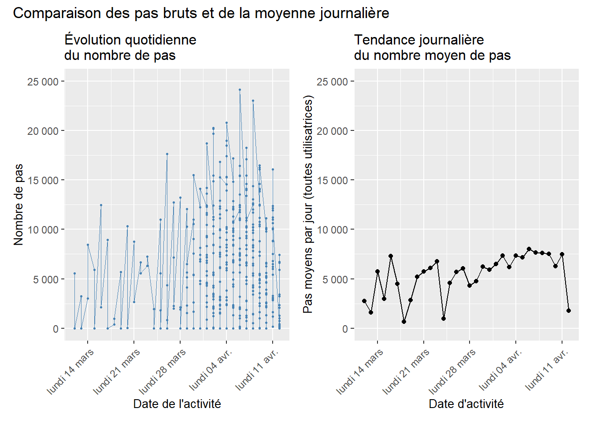
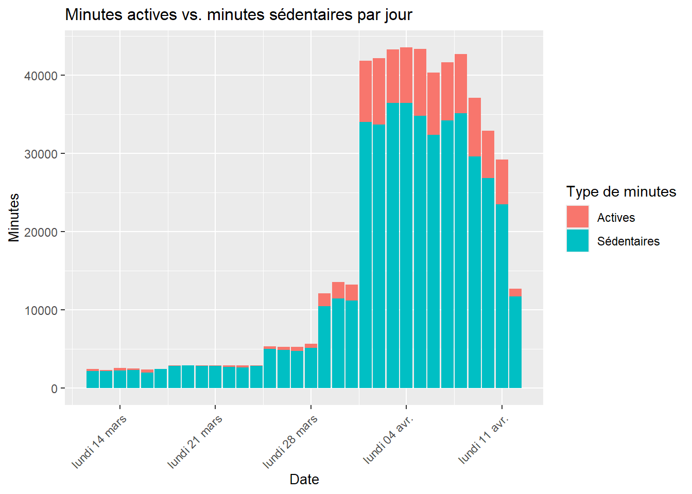
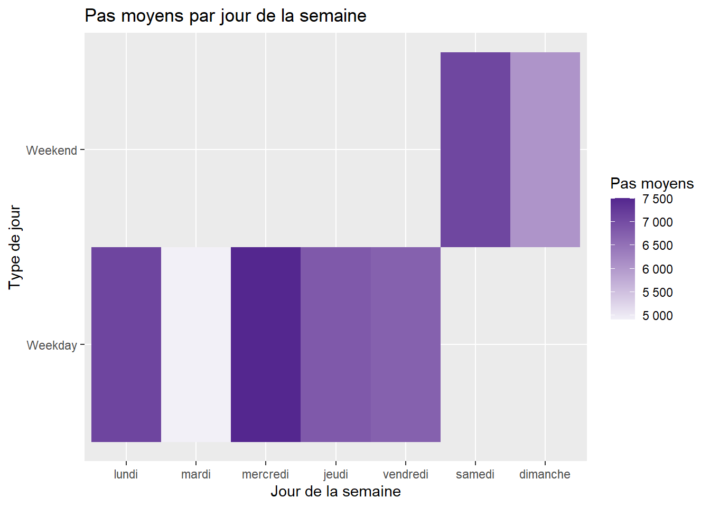
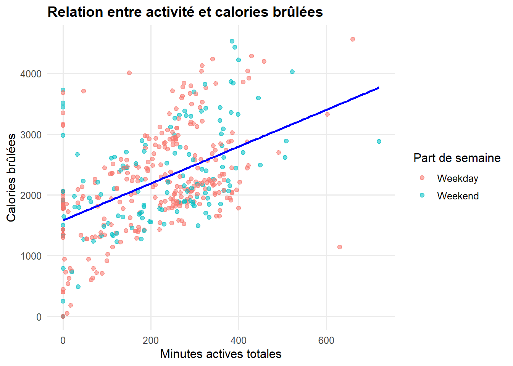

L’évolution des pas met surtout en évidence une forte hétérogénéité individuelle : pour une même date, les volumes journaliers varient de quelques milliers à plus de 20 000 pas, ce qui crée une dispersion importante et des pics isolés. Ces valeurs reflètent d’abord les différences entre utilisatrices plutôt qu’un schéma temporel commun.
En agrégeant les données par date, une tendance claire émerge : le nombre moyen de pas augmente progressivement de début mars à début avril, passant d’environ 3 000–4 000 à 6 000–7 500 pas. Plusieurs chutes ponctuelles apparaissent (vers le 18 mars, le 31 mars et le 12 avril), liées soit à une baisse d’activité générale, soit à une diminution du nombre d’utilisatrices actives ces jours-là. L’ensemble traduit une dynamique collective de plus grande activité au fil du temps.

Les minutes sédentaires constituent l’essentiel du volume quotidien, ce qui traduit un comportement global majoritairement statique. À partir de la fin mars, puis surtout au début avril, on observe une hausse brusque du total des minutes enregistrées, liée à une augmentation du nombre d’utilisatrices actives dans les données. Les minutes actives progressent en parallèle, mais leur part reste nettement inférieure à celle des minutes sédentaires, même lors des journées où l’activité totale est la plus élevée.

L’analyse montre un schéma clair : les utilisatrices marchent davantage le week-end que la semaine. Le samedi est le jour le plus actif, suivi du dimanche, tandis que mardi est le moins actif. Au sein des jours ouvrés, seul le mercredi se démarque par une activité un peu supérieure. Cette répartition s’explique par la disponibilité plus grande durant le week-end, ce qui augmente naturellement le nombre de pas.

Le graphique montre une relation positive : plus les minutes actives augmentent, plus les calories brûlées sont élevées. Les catégories Weekday et Weekend suivent pratiquement la même dynamique. Les minutes actives sont le principal moteur de la dépense calorique, indépendamment du jour de la semaine.